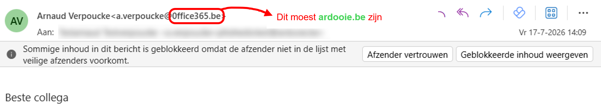

Dit was een phishing-simulatie van Gemeente Ardooie.
Je hebt op een link geklikt die in een echte aanval schadelijk had
kunnen zijn.
Cybercriminelen richten zich niet op systemen, maar op
mensen.
Elke klik maakt een verschil.
Jouw alertheid is een belangrijke schakel in de bescherming van Gemeente
Ardooie.
Vandaag was dit slechts een oefening.

Cybercriminelen gebruiken vandaag ook AI
🤖 Met behulp van AI kunnen aanvallers e-mails veel geloofwaardiger
maken.
🤖 AI analyseert schrijfstijlen en bootst deze overtuigend na.
🤖 Berichten die perfect geschreven lijken, verdienen ook een kritische
blik.
Hoe herken je phishing?
🚨 Het bericht creëert een gevoel van urgentie
"Dringend: ...", "Handel vandaag nog!"
🚨 Het bericht zet je onder druk
"Dit is je laatste waarschuwing."
🚨 Je wordt gevraagd op een link te klikken
🚨 Je wordt gevraagd in te loggen via een link
🚨 Er wordt gevraagd om gegevens, wachtwoorden of betalingen
🚨 De afzender lijkt betrouwbaar, maar klopt niet volledig
🚨 Het bericht wijkt af van de normale communicatie
Wat doe je best?
✅ Neem even de tijd voordat je klikt
✅ Controleer de afzender aandachtig
✅ Controleer de bestemming van links
✅ Twijfel je? Bel de afzender en/of IT.
✅ Meld verdachte berichten door op de knop 'Rapporteren' te klikken
Denk na.
Controleer.
Klik bewust.
Controleer.
Klik bewust.
Bedankt om mee te werken aan een veiligere organisatie.